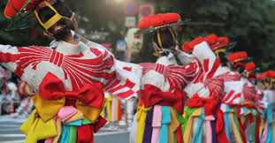

盛岡さんさ踊り

夏空高く響き渡る太鼓の音に合わせて軽快なテンポで群雄するさんさ踊りは、
市民に古くから親しまれてきた盆踊りです。藩政時代から伝わるさんさ踊りが
内の目抜き通りで４日間繰り広げられます。現在では踊り手、笛、太鼓あわせ
て３万６千人ほどの群衆となります。力強いリズムにあわせて踊る、勇壮でエ
ネルギッシュな群舞は迫力満点。観客も自由に参加できます。
観光情報
ジャンル
行事
所在地
盛岡市清水町14-12 盛岡商工会議所内
電話番号
019-624-5880
営業日
2022/8/1～2022/8/4
[アクセス経路]
いわて花巻空港―ＪＲ盛岡駅：４５分
仙台宮城―盛岡：約１時間５０分
秋田中央―盛岡：約２時間１０分